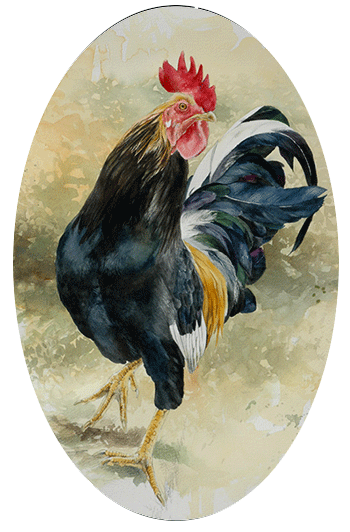
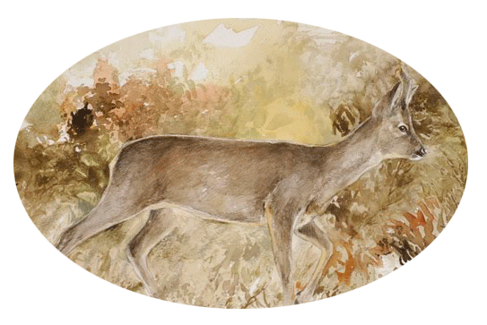
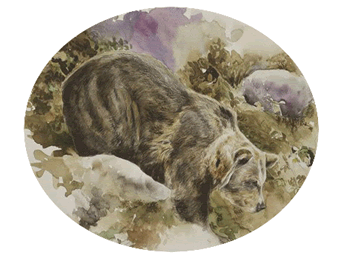

Cuando canta el gallo negro es que ya se acaba el día... (resto del texto)

El corzo (Capreolus capreolus) es una especie de mamífero... (resto del texto)

Güei l’osu pardu ye’l carnívoru más grande... (resto del texto)